CAMPECHE
Campeche es uno de los treinta y un estados que, junto con la Ciudad de México, conforman México. Su capital y ciudad más poblada es San Francisco de Campeche. Está divido en trece municipios.
Está ubicado en la península de Yucatán en la región sureste del país, colindando al norte y noreste con Yucatán, al este con Quintana Roo, al sur con Guatemala, al oeste con el Golfo de México y al suroeste con Tabasco.
Con 899,931 habitantes en 2015, es el tercer estado menos poblado —por delante de Baja California Sur y Colima, el menos poblado—, y con 14,20 hab./km² (habitantes por kilómetro cuadrado), el cuarto menos densamente poblado —por delante de Chihuahua, Durango y Baja California Sur, el menos densamente poblado—. Se fundó el 29 de abril de 1863.
Desde el punto de vista físico, Campeche se encuentra en una posición de transición entre la selva tropical del Petén guatemalteco y la selva baja caducifolia del extremo norte de la península de Yucatán.
TOPONIMIA
Existen diversas teorías acerca del origen de la palabra Campeche (en maya: kaan peech ‘serpiente y garrapata’). Otros indican que Campeche se deriva de las palabras k'iin (en maya: K'iin ‘sol’) que significa sol y peech, como ya se indicó, garrapata. Algunos suponen que a este nombre (k'iin peech) se le puede agregar el prefijo aj que quiere decir lugar y en conjunto diría "lugar del señor sol garrapata".
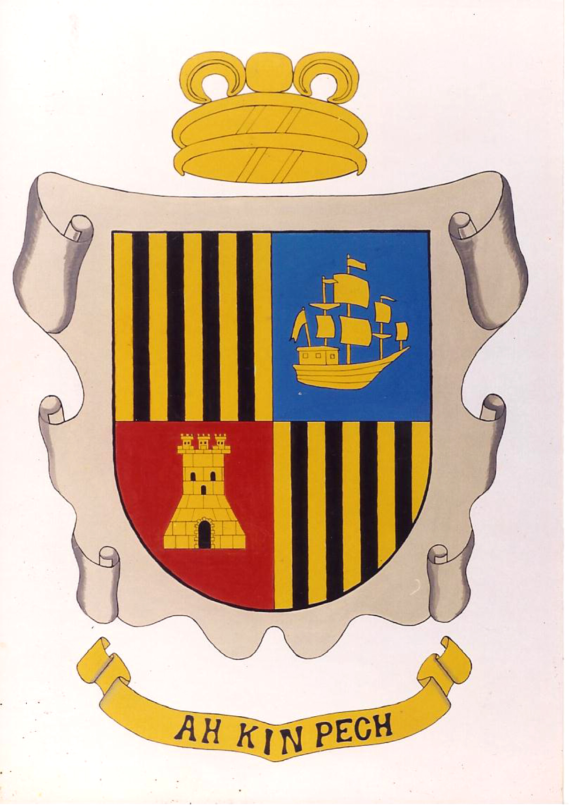
ESCUDO
El escudo data del 1 de octubre de 1777 cuando el rey Carlos III de España le otorgó San Francisco de Campeche el reconocimiento de ciudad (antes villa), y con ello, un escudo de armas. Posteriormente cuando se creó el Estado de Campeche el 29 de abril de 1863 adoptó el escudo de su capital como el escudo estatal. El escudo del estado de Campeche es uno de los más ornamentados en el país y que conserva su vigencia hasta nuestros días desde épocas coloniales.
El escudo Escudo de Campeche está blasonado así:
El escudo está dividido en cuatro partes. A cada una de ellas se le llama cuartel. El fondo rojo de los cuarteles que se encuentra arriba a la izquierda y abajo a la derecha, significa valentía, firmeza y honradez, mientras que las torres manifiestan la grandeza y poder en la defensa del territorio. Los navíos de los cuarteles superior derecho e izquierdo indican la condición de puerto marítimo importante y el azul que los enmarca, suma a estas virtudes la pureza de sentimientos, la lealtad y la honestidad. El escudo cuenta con una bordadura de oro, y en la parte superior central se observa una corona real, que expresa majestuosidad.
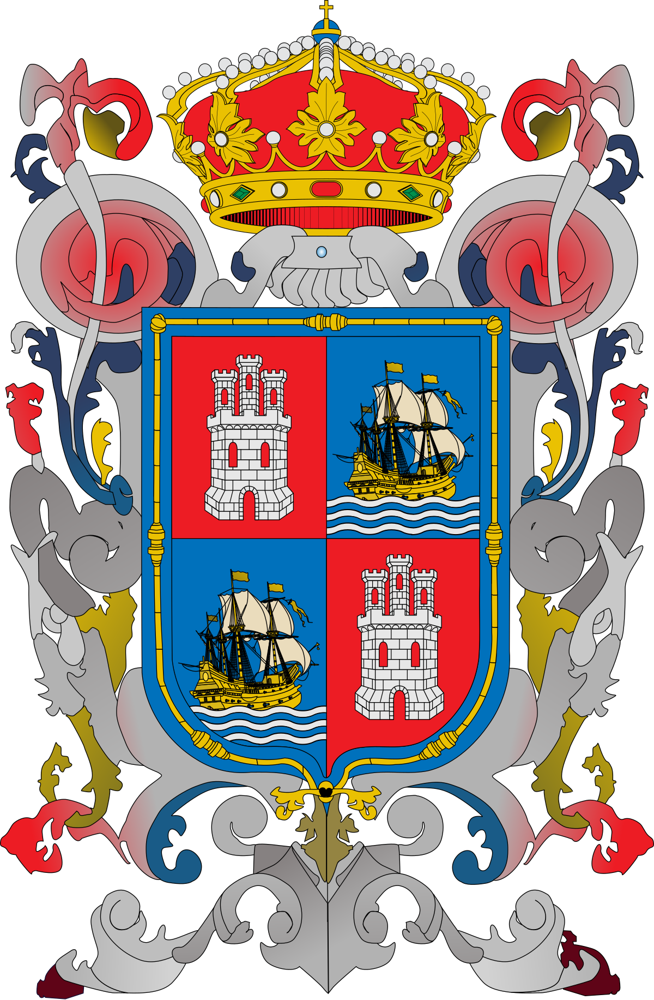
HISTORIA
La historia de Campeche propiamente dicha empieza en la primera mitad del siglo XVI. Antes de eso, el territorio que hoy se denomina Campeche y, en general, la península de Yucatán, era un reducto territorial en el que se desarrolló, probablemente por más de un milenio, el pueblo y la cultura maya y que fue llamado por los propios mayas, el Mayab.
POBLAMIENTOS PREHISPÁNICOS
Los indicios más tempranos de ocupación humana, en el actual territorio de Campeche, se remontan a fines del Preclásico Medio, hacia 550 a. C. Durante esa época, la región de las tierras bajas mayas experimentó diversos movimientos migratorios que llevaron de sur a norte a núcleos importantes de gente, quizá para colonizar regiones hasta ese momento vacías. Este movimiento seguramente tuvo como causa un crecimiento de la población que obligó a buscar nuevas tierras. Se ha encontrado evidencias de ello en sitios como Becán, Edzná, Dzibilnocac, El Aguacate y Alimoche.
En la costa los primeros asentamientos parecen ser el resultado de dos corrientes migratorias: el suroeste fue ocupado por grupos procedentes directamente de las tierras bajas mayas del sur, mientras que en la costa norte los grupos procedían del interior de la península. Los sitios más representativos de la costa sur son Aguacatal, Xicalango y Tixchel.
Los primeros habitantes de Aguacatal llegaron entre 300 y 100 a. C., y eran portadores de una cultura avanzada, con edificios templo y una cerámica tipo Chicanel. Existen múltiples sitios costeros con habitación, durante el Preclásico Tardío. Eran comunidades agrícolas, aunque parte de su subsistencia se basaba en la explotación de los recursos marinos. Por otro lado, la mayoría de los sitios tempranos de la costa noroeste de Campeche fueron basureros y depósitos de concha. Eran comunidades de subsistencia. La extracción y comercialización de la sal fue la actividad principal de estos grupos, en los lugares donde fue posible su explotación. En esta parte de la costa, los asentamientos más importantes surgieron durante el periodo Clásico. En el Preclásico Tardío los asentamientos fueron mínimos.
Existen, desde luego, muchos otros sitios arqueológicos en Campeche que, sin duda, tuvieron sus inicios durante el Preclásico Medio y Superior, como Calakmul, Hormiguero y Río Bec, en el sur; El Tigre, en el suroeste; Dzibilnocac y Tabasqueño, en el centro, y Jaina, en la costa norte.
El final del Preclásico Medio y el Tardío fueron periodos de una gran dinámica, en los cuales hubo un aumento general de las poblaciones, posiblemente con presiones demográficas que habían de catalizar la organización política y los enfrentamientos armados, eran comunidades portadoras de una agricultura extensiva e intensiva, así como poseedoras de una cerámica perteneciente a la esfera Chicanel. Para esa época ya existía un sistema de comercio que permitía el intercambio de ciertos productos entre comunidades del sur y del norte.
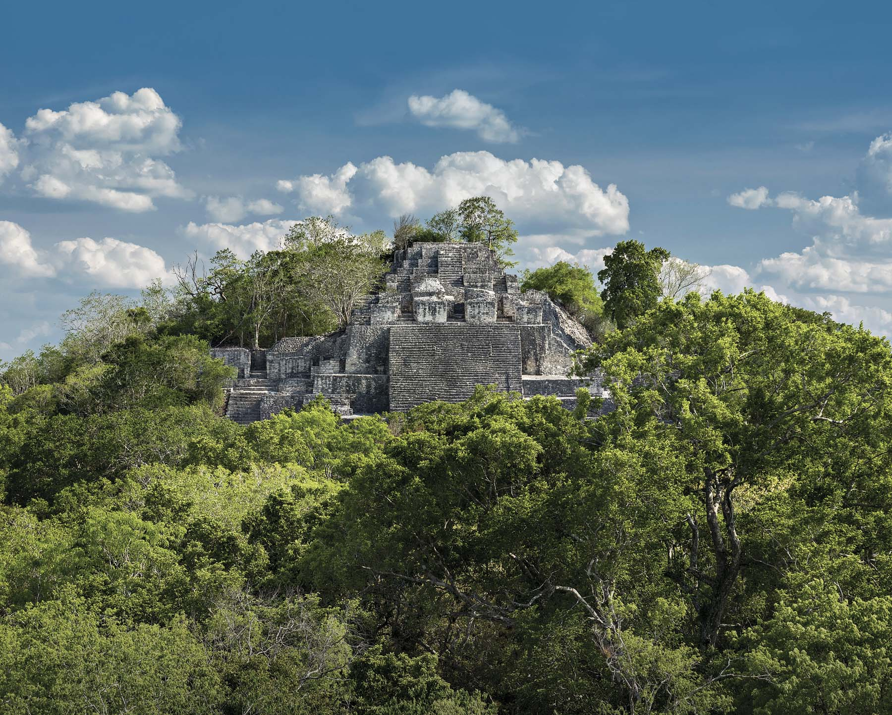
DESPUÉS DE LA CONQUISTA ESPAÑOLA
Poco después de la Conquista, empezaron a arribar al puerto de Champotón los primeros evangelizadores: fray Diego de Landa, fray Juan de la Puerta, fray Luis de Villalpando, fray Diego de Béjar y fray Melchor de Benavente. Ellos iniciaron la evangelización en San Francisco de Campeche, Calkiní, Champotón y Mérida. También fungieron como educadores, enseñando a los indígenas las letras y los números.
En 1531 llegó a Campeche el adelantado Francisco de Montejo y fundó ahí la villa de Salamanca de Campeche, nombró como alcalde a Gonzalo Nieto y siguió su camino para recorrer el resto de la península. Cuatro años después, tanto el alcalde como su guarnición, abandonaron la villa y se fueron a Tabasco.
En 1540, Francisco de Montejo, hijo del conquistador con el mismo nombre, llegó a tierras campechanas, se enfrentó a los mayas del lugar apoyado por nativos de otras regiones de Mesoamérica, los venció y fundó el 4 de octubre la ciudad de San Francisco de Campeche.
En el año de 1543, se creó la Audiencia de los Confines de Guatemala (Real Audiencia de Guatemala. Al año siguiente, Yucatán se incorporó a dicha institución. Campeche, Champotón, Hecelchakán y Calkiní se empiezan a poblar de españoles. Las regiones de los Chenes y la selva campechana quedan como zonas rurales, donde los pueblos indígenas eran sometidos a encomenderos españoles.
Bajo estas generalidades, a partir de 1564 —cuando ya habían comenzado los ataques piratas a las naves españolas y a las poblaciones de la costa— se estableció la Capitanía General de Yucatán, y fue el señor Luis de Céspedes y Oviedo el primero en ostentar el título de gobernador y capitán general, quien consideró la necesidad de fortificar la villa de San Francisco de Campeche.
En 1548, un año después de terminada oficialmente la Conquista de la península yucateca, el territorio de Yucatán se anexa al virreinato de la Nueva España, quedando como provincia. Poco después se dividió en cuatro cabeceras: Mérida, Valladolid, Campeche y Bacalar. El mismo año Campeche es reconocido como parte de la Capitanía General de la Provincia de Yucatán.
En San Francisco de Campeche, se tuvo conocimiento de lo que le esperaba en materia de conflictos de mar y tierra cuando los piratas la atacaron por primera vez en 1557; en esta fecha, se presentó un grupo de ellos que abordó un barco entrando al puerto. Años más tarde, hacia 1561, hubo piratas de distintas nacionalidades que desembarcaron en San Francisco de Campeche; los habitantes defendieron la plaza y recuperando lo robado lograron ahuyentarlos.
Estos acontecimientos no permitían que la población se desarrollara con tranquilidad y a menos de dos décadas de su fundación, San Francisco de Campeche vivió una colonización difícil de prever, protagonizada por piratas ingleses, quienes llegaban buscando explotar el palo de tinte; ocuparon por primera vez la Isla de Tris —más tarde Isla del Carmen— el 26 de octubre de 1558. La sonda de Campeche, que era por naturaleza la más abrigada y tranquila, fue convertida en la más peligrosa por obra de los piratas. Los más conocidos fueron en su mayoría de origen británico, como por ejemplo William Parker, Henry Morgan, Jacobo Jackson (llamado conde de Santa Catalina) y Mansvelt; también hubo piratas de otras nacionalidades, como Diego el Mulato, oriundo de La Habana; Cornelius Jol Pie de Palo, neerlandés; Bartolomé, portugués; Rock Brasiliano, neerlandés; François L'Olonois o Juan David Nau el Olonés, francés; Laurent Graff Lorencillo, flamenco; Lewis Scott; Gramont, francés; Van Horn, neerlandés; Abraham, neerlandés; Joseph Cornelius, neerlandés; Isaac Hamilton; John Bold; Vander Brull; Barbillas.
Las bases o refugios para la delincuencia marítima estuvieron en Jamaica, para los ingleses, y en Isla Tortuga, cerca de Haití, para los franceses. Los navíos utilizados para estas correrías han sido caracterizados con el nombre de carraca o buque mercante entre los portugueses, patache o barco de vela de dos palos, galeón de dos o tres cubiertas, aparejado con tres palos y de popa redondeada; bergantín de tres palos, ligero para la huida, urca o embarcación ancha de una sola cubierta y fragata que podía ser ágil. El armamento conveniente constaba de mosquetes, cuchillos, dagas, cañones, arcabuces, lanzas y rodelas, espadas y ballestas. A bordo de estas naves y con esa clase de armas los filibusteros cruzaron el mar de las Antillas, el canal de Yucatán, la Florida, el mar Caribe, la sonda de Campeche y la laguna de Términos, creando además un estilo especial en su vestido y arremetiendo al amparo de la bandera que izaban, misma que ostentaba una calavera.
Fue mérito del sargento novohispano de Marina Alonso Felipe de Andrade (1667-1717) el expulsar para siempre (a costa de su vida) a los piratas británicos que se habían establecido en la laguna de Términos, el 15 de julio de 1717.
Durante el siglo XVIII Campeche había solicitado a la Corona Española un Consulado de Comercio propio, pues estaba sometido al Consulado de México. La función del Consulado era representar a los comerciantes de su jurisdicción ante las instancias legales y la Corona. En las primeras solicitudes que se hicieron, en 1799, 1803 y 1809, no existió la participación del sector comercial yucateco, aunque tampoco hubo una oposición por parte de quienes la conformaban y se mantuvieron a la expectativa.
Existió fuerte oposición por el Consulado de México y el Consulado de Veracruz (recién abierto por cédula Real) pues se veían disminuidos sus intereses. Hasta 1791, lo único que los comerciantes campechanos habían logrado para unificarse, había sido la formación de una Diputación de Comercio que, similar a la de Mérida, debía ser siempre sancionada por el Consulado de México.
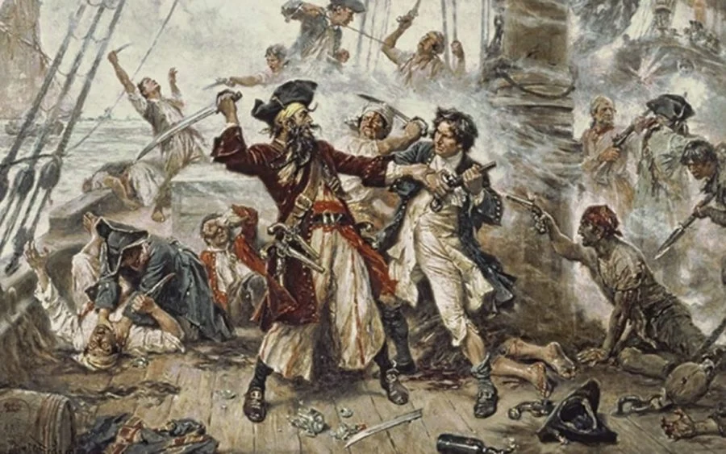
INDEPENDENCIA DE LA CAPITANÍA GENERAL DE YUCATÁN
En la Nueva España, el 16 de septiembre de 1810, se inició el movimiento de independencia por el ejército insurgente dirigido por Miguel Hidalgo. Sin embargo, en él participaron diversos sectores de la población defendiendo distintos objetivos e intereses. Un grupo pugnaba por la salida de los franceses de la metrópoli y la vuelta de Fernando VII. La burguesía criolla de la Nueva España aprovecharía la coyuntura para liberarse del dominio español y de las restricciones que la Corona había impuesto al comercio y a las industrias en sus colonias.
La Capitanía General de Yucatán, que había disfrutado durante toda la Colonia de ciertos privilegios concedidos por España, y en la que los grupos económicos y políticamente poderosos mantenían estrecha relación con la metrópoli, no participó directamente en estos primeros brotes de insurgencia. A pesar de ello, en la Intendencia alcanzaron cierto eco los principios liberales que ya se difundían por toda Europa.
FORMACIÓN DEL ESTADO DE CAMPECHE
El estado de Campeche se formó el año de 1862, como resultado de una larga lucha política entre los políticos yucatecos de mediados del siglo XIX que llevó a la escisión del estado de Yucatán, cuya geografía había surgido directamente del territorio que fue el de la Capitanía General de Yucatán en la época colonial y que se integró a la nación mexicana en 1824, después de su independencia de la corona española.
Ese año de 1862 surgió a la vida política el estado de Campeche, mediante el decreto del 19 de febrero del presidente Benito Juárez que reconoció a la nueva entidad federativa. Juárez pudo proceder a este reconocimiento en virtud a la Ley del 11 de diciembre de 1861, que le había conferido amplias facultades en todas las ramas de la administración pública. El decreto definitivo, ya que en el proceso legislativo se obtuvo la sanción de la mayoría de las legislaturas de los estados fue, poco más tarde, un cumplido legal y tuvo el carácter de ratificación. Este, se expidió el 29 de abril de 1863. El estado se formó con uno de los distritos yucatecos: el de Campeche (los otros eran Mérida, Tekax, Izamal y Valladolid), el distrito de Campeche lo formaban los partidos de Carmen, Champotón, Campeche, Hecelchakán y Bolonchenticul. El primer gobernador campechano fue el licenciado Pablo García Montilla.
La región que conforma al actual estado de Campeche, fue de suma importancia por los árboles de maderas preciosas que se levantaban sobre lomeríos, planicies y pantanos, así como en las orillas de los ríos y lagunas. La historia de la riqueza maderera está relacionada con las incursiones filibusteras, principalmente de ingleses y neerlandeses. Cuando los filibusteros se hacían de un gran botín, adquirían una pequeña embarcación y un cañón; una correría afortunada producía otras veinte naves; si eran un centenar, se les creía mil. Era difícil escapar de ellos y mucho más seguirlos; sorprendieron y saquearon las ricas ciudades de Chagra, Maracaibo, Veracruz, Panamá, Puerto Rico, San Francisco de Campeche, Santa Catalina y los suburbios de Cartagena.
Sin embargo, esta situación habría de cambiar radicalmente por los sucesos políticos que conmocionaron a la Nueva España, a principios del siglo XIX. España había sido invadida por el ejército francés de Napoleón, quien impuso como rey de la península ibérica, a su hermano José Bonaparte, en sustitución de Fernando VII.
Entre 1880 y 1883, gobernó Campeche Arturo Schiels, y para el siguiente cuatrienio, Joaquín Baranda triunfó de nuevo en las elecciones. Baranda aceptó la gubernatura, pero en 1885, pidió al Congreso campechano y obtuvo licencia indefinida de su cargo, quedando como interino Juan Montalvo. El resto del tiempo que duró el régimen porfirista, de 1887 a 1911, Campeche tuvo, entre licencias y renuncias, catorce gobernadores.
Durante la dictadura porfirista, la economía campechana continuó basándose en el cultivo y comercio de maíz, arroz, caña y ganado para el mercado interno; en la exportación del palo de tinte, de sal y de maderas. Sin embargo, el comercio de la sal se vio afectado por el decreto federal del 7 de octubre de 1881, que permitía su libre importación del extranjero. La industria naviera, que hasta la década de los sesenta había tenido mucho peso, declinó notablemente hacia fines de siglo.
Por otro lado, la extracción y comercialización del palo de tinte, que durante los años críticos de guerra había disminuido por falta de mano de obra, se recuperó rápidamente, manteniendo el partido del Carmen como uno de los dos más importantes del Estado. El otro era Campeche, que también exportaba palo de tinte, maderas y un gran volumen de sal.
En 1881, el gobernador Arturo Schiels solicitó y obtuvo del gobierno federal la concesión para abrir nuevos canales derivados de los ríos, Candelaria, Palizada y Champotón, con el fin de utilizarlos para transportar el palo de tinte y otras maderas preciosas. Ello serviría, además, para incrementar las relaciones mercantiles que existían entre Campeche y el estado de Chiapas y Guatemala.
La venta de palo de tinte campechano se incrementó año tras año, hasta llegar a la exportación de cien mil toneladas durante el año de 1896; pero a partir de ese momento, la actividad fue perdiendo importancia y, para 1915, solo se exportaron al extranjero diecisiete mil toneladas.
La razón de lo anterior estaba en la utilización de colorantes químicos en Europa, los cuales se empezaron a emplear desde 1855 y, para fines de siglo, se habían generalizado en la industria del viejo continente.
En la etapa porfirista, Campeche mantuvo en el mercado sus ya famosas maderas y, asimismo, se inició en la entidad la explotación del chicle, aunque esta actividad solo cobraría importancia hasta principios del siglo XX.
En Campeche, al igual que en el resto del país, los primeros años del siglo XX se caracterizaron por la dominación política y económica de un pequeño grupo que ejerció el poder local, a la manera de Porfirio Díaz en lo nacional. Tal vez con menos uso de la fuerza pública o de guardias blancas, pero no por esto el sistema de explotación fue menos brutal. Los mecanismos de control y la alienación del trabajador crearon condiciones en la que el descontento no produjo levantamientos populares de importancia, salvo pequeños brotes de rebeldía en algunas haciendas y fincas rurales de Tenabo, como la finca "Chilib"; o en Champotón, en las fincas de San Pablo y Haltunchén, en las cuales los protagonistas fueron jornaleros jamaiquinos y huastecos, que fueron controlados sin mayor problema, incluso sin que se registraran enfrentamientos armados.
Se continuó la aplicación de la ley agraria que legitimaba la esclavitud de los peones y sus familiares. Pero, no obstante esta medida para fijar al trabajador en las fincas de campo, oficialmente fue señalado como un problema la baja colonización de tierras laborales; de ahí que se buscara estimular la participación de hacendados en proyectos de inmigración de trabajadores japoneses, de manera experimental, como sucedía en el vecino estado de Yucatán; esta medida no tuvo éxito. Igualmente, se solicitaron prisioneros yaquis al gobierno federal (llegando a Campeche un total de 165, formados por partes iguales de mujeres y niños), sin embargo estos tampoco fueron significativos.
El proceso de acumulación de tierras en pocas manos se aceleró en esta primera década, y en manos de 14 hacendados se acumularon 147 haciendas, que representaban la quinta parte del territorio del estado de Campeche.
La economía fue fundamentalmente agrícola y forestal: maíz, caña de azúcar y henequén fueron los principales cultivos; en lo referente a la explotación forestal, las maderas tintóreas y las resinas de zapote, principalmente el "palo de tinte". Aunque por esas fechas dejaba de ser rentable, a raíz de su casi extinción en los partidos de Champotón y Carmen, y la guerra ruso-japonesa que originó el cierre del principal mercado. Por otra parte, el henequén, a pesar de que se incrementó su cultivo, no logró ser dominante en la economía campechana. La caña de azúcar dejó de ser exportada y abasteció al mercado interno de la península.
La inversión extranjera fue menor, en forma directa, que el promedio general en el país, pero controló las ramas fundamentales de la economía. Así, la resina de zapote y el palo de tinte fueron monopolizados por la Compañía Laguna Co. y la Internacional Lumber and Development; y el henequén, Tebro Bros. y la International Harverst Co., todas de capital norteamericano. La Compañía S. Pearson and Son LTD inició la explotación en busca de petróleo en el territorio de Campeche.
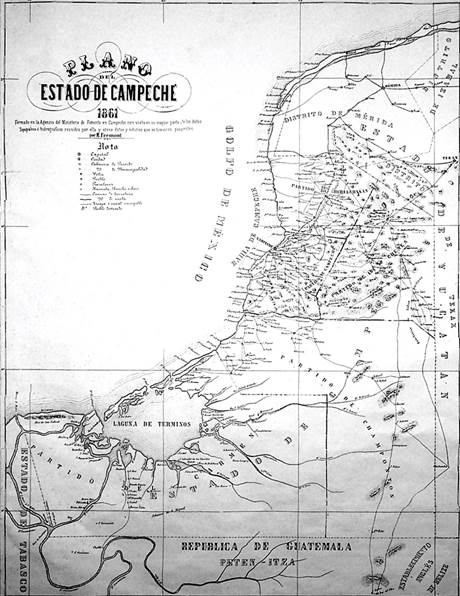
GEOGRAFÍA
El estado de Campeche se localiza al sureste de la república mexicana y al oeste de la península de Yucatán, entre los paralelos 17°49' y 20°51' de latitud norte y los meridianos 89°06' y 92°27' de longitud oeste. Colinda al noreste con el estado de Yucatán, al este con el estado de Quintana Roo, al sur con la República de Guatemala, al suroeste con el Estado de Tabasco y al oeste con el golfo de México.
Campeche, con una extensión total de 57 924 km², el 3,0 % del territorio nacional, es una de las tres entidades que conforman la península de Yucatán. Su población total es aproximadamente de 754 730 habitantes, el 0,7 % del total del país. Desde el punto de vista físico, Campeche se encuentra en una posición de transición entre la selva tropical del Petén guatemalteco y la selva baja caducifolia del extremo norte de la península de Yucatán.
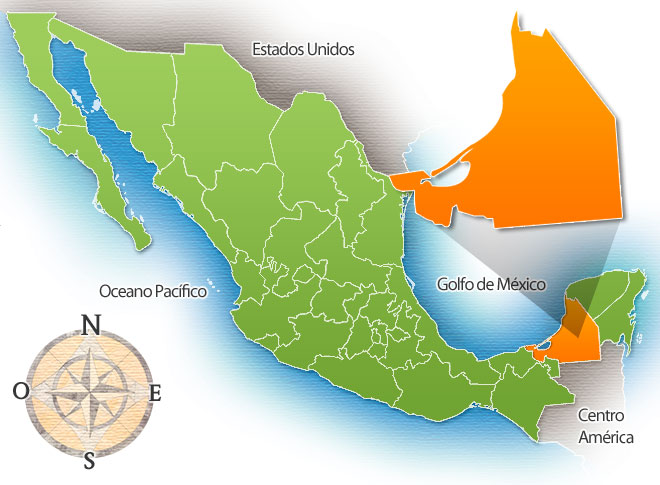
CLIMA
El estado cuenta con tres tipos de climas: Am cálido húmedo con abundante lluvia en verano, A(W) cálido subhúmedo con lluvias en verano y BS1(h') semiseco cálido.
En general, el clima del estado de Campeche es cálido subhúmedo con lluvias en verano y con una precipitación pluvial de 1300 a 1500 mm; el período de lluvias es de junio a octubre. La temperatura media anual es de 27 °C; no se presentan heladas, y en cuanto a huracanes, su litoral es el de menor incidencia.
Si bien la importancia de las precipitaciones incide en la actividad agrícola temporalera, su potencialidad radica primordialmente en la recarga de los mantos acuíferos.
Su posición geográfica dentro del trópico, aunada a su vecindad con el golfo de México y el mar Caribe, determinan la presencia de climas cálidos, húmedos y subhúmedos con lluvias en el verano, con temperaturas medias anuales superiores a 22 °C y una precipitación total anual que varia de menos de 1000 milímetros en el norte, en parte del área que fisiográficamente corresponde a la provincia denominada “península de Yucatán”, sobre zonas calizas que favorecen la infiltración, hasta cerca de 2000 milímetros en el suroeste en la llanura costera del Golfo Sur, donde por la naturaleza del terreno es mayor, razón por la cual se presenta un gran número de corrientes y depósitos de agua, como los ríos Palizada y Cantería o las lagunas de Atasta y Pom.
La temperatura promedio anual es de 27 °C, presentándose los niveles máximos antes del solsticio de verano con un promedio de 28 °C, alcanzándose una temperatura máxima histórica de 43 °C.
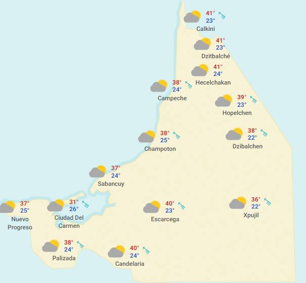
FLORA Y FAUNA
MANATÍES
Trichechus es un género de mamíferos sirénidos de la familia de los triquéquidos (Trichechidae), siendo el único representante de esta familia. Son conocidos como manatíes o vacas marinas. Son apacibles herbívoros que pasan la mayor parte de su tiempo buscando e ingiriendo las plantas ribereñas y del lecho marino de aguas poco profundas. Los manatíes viven en aguas tanto dulces como saladas, cerca de las costas de América y África. Su único depredador es el hombre; y aunque no existen registros, se presume que con poca frecuencia las orcas podrían atacar a los triquéquidos o manatíes, puesto que estos, por ser grandes, lentos y gordos, parecen una presa ideal para estos depredadores; sin embargo, debido a la distribución de los triquéquidos, que principalmente se da en aguas costeras y de relativa baja profundidad (y frecuentemente en aguas dulces) de los trópicos, en donde las orcas aparecen en raras ocasiones, se cree que los triquéquidos escapan de su depredación.
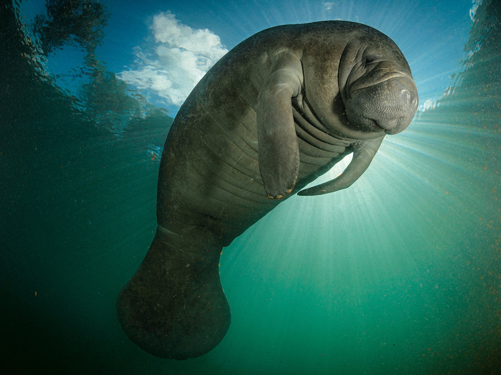
MAZAMA AMERICANA
La corzuela colorada, guazuncho, guazú-pytá o guazo (Mazama americana) es una especie de mamífero artiodáctilo de la familia Cervidae que habita en varios países de América del Sur.
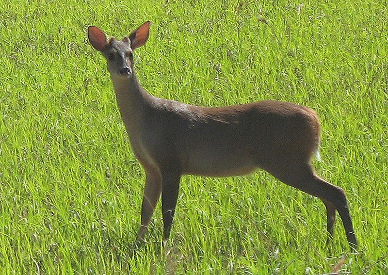
TORTUGA CAREY
La tortuga carey (Eretmochelys imbricata) es una especie de tortuga marina de la familia de los quelónidos. Es la única especie del género Eretmochelys. Existen dos subespecies, Eretmochelys imbricata imbricata que se puede encontrar en el océano Atlántico y Eretmochelys imbricata bissa, localizada en la región indo-pacífica.
Su aspecto es similar al de otras tortugas marinas. Tiene un cuerpo plano, un caparazón protector, y sus extremidades en forma de aletas están adaptadas para nadar en mar abierto. Se distingue fácilmente de otras tortugas marinas por su pico puntiagudo y curvo con una prominente mandíbula superior (tomium) y por los bordes en forma de sierra de su caparazón. Aunque la tortuga pasa parte de su vida en mar abierto, se la encuentra más frecuentemente en lagunas poco profundas y arrecifes de coral, donde encuentra fácilmente su presa preferida, las esponjas de mar. Algunas de las esponjas de las que se alimenta son conocidas por ser altamente tóxicas y letales para otros organismos por su alto contenido de óxido de silicio, lo que convierte a la tortuga carey en uno de los pocos animales capaces de alimentarse de organismos silíceos. También se alimentan de otros invertebrados, como tenóforos y medusas.
A causa de las prácticas de pesca humanas, las poblaciones de esta especie a lo largo de todo el mundo se encuentran en serio peligro, por lo que ha sido clasificada por la Unión Internacional para la Conservación de la Naturaleza como especie en peligro crítico de extinción. Varios países, como China y Japón, las han cazado por su carne, considerada un manjar. Los caparazones de las carey y el material que los constituye (también llamado carey) ha sido empleado para la confección de objetos decorativos. Asimismo, se denomina carey, por extensión, al material del que se conforman los caparazones de otras tortugas marinas empleados en idéntica producción artesanal. Según el Convenio sobre el Comercio Internacional de Especies de Fauna y Flora Salvaje Amenazadas (CITES), la captura y el comercio de estas tortugas y sus productos derivados son ilegales en muchas naciones.
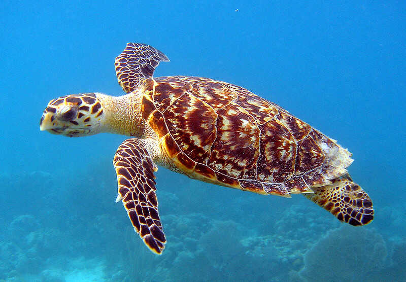
PAVÓN NORTEÑO
El paujil, pajuil u hocofaisán (Crax rubra), también conocido como pavón norteño, o como faisán real, kambul (maya), pavón grande o pavón norteño, es una especie de ave del orden Craciformes (Enciclovida considera al orden de las Galliformes donde se ubican también a las chachalacas, guajolotes silvestres, codornices y pavón), de la familia Cracidae (chachalacas), que se encuentra en los bosques del sur de México, Centroamérica y Sudamérica (este de Colombia, Ecuador y Amazonía).
En México se distribuye en los estados del sureste como son: Veracruz, Oaxaca, Tabasco, Chiapas, Campeche, Quintana Roo y Yucatán. También se le ha registrado en los estados de Nuevo León, Tamaulipas, Zacatecas, San Luis Potosí, Querétaro, Hidalgo y Puebla. La especie alcanza una longitud de 91 cm y un peso de 4,5 a 5 kg. El dimorfismo sexual se complementa con el polimorfismo de las hembras (existen tres tipos de hembras). Los machos presentan un tubérculo grande amarillo en el pico; plumaje negro brillante con vientre blanco y patas grisáceas. Esta ave terrestre vive en grupo y en selvas hasta los 1,200 m s. n. m.. La NOM-059-SEMARNAT-2010 considera a la especie como Amenazada y la UICN 2019-1 como Vulnerable.
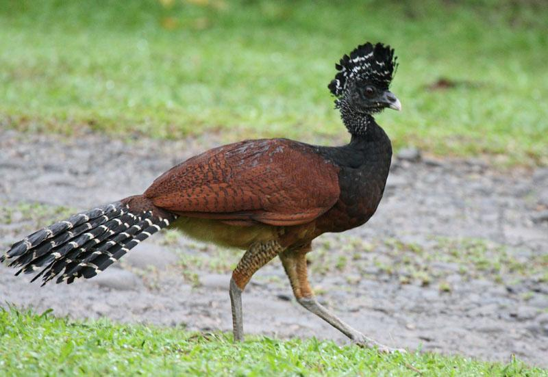
CAIMAN
Caiman es un género de cocodrilos de la familia de los aligatóridos, conocidos vulgarmente como caimanes o yacarés. Se distribuyen en las regiones subtropicales y tropicales de América, desde Florida hasta el sur de Sudamérica.
Nótese que el nombre científico del género es Caiman, sin tilde (ya que en latín no se usa), el cual fue tomado del nombre común, “caimán”, con tilde.
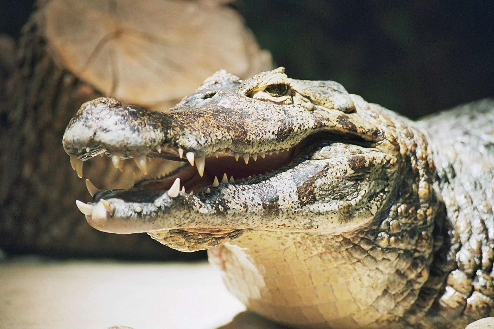
JAGUAR
El jaguar, yaguar o yaguareté (Panthera onca) es un carnívoro félido de la subfamilia de los Panterinos y género Panthera. Es la única de las cinco especies actuales de este género que se encuentra en América. También es el mayor félido de América y el tercero del mundo, después del tigre (Panthera tigris) y el león (Panthera leo). Su distribución actual se extiende desde el extremo sur de Estados Unidos continuando por gran parte de México, América Central y América del Sur hasta el norte y noreste de Argentina. Habita principalmente en zonas tropicales secas y húmedas, pero también vive en matorrales áridos. Su dieta es muy amplia, puede cazar grandes presas, incluido ganado, o pequeños animales. Exceptuando algunas poblaciones en Arizona (suroeste de Tucson), esta especie ya ha sido prácticamente extirpada en los Estados Unidos desde principios de la década de 1900.N.
Se encuentra emparentado y se asemeja mucho en apariencia física al leopardo (Panthera pardus), pero generalmente es de mayor tamaño, cuenta con una constitución más robusta y su comportamiento y hábitat son más acordes a los del tigre (Panthera tigris). Si bien prefiere las selvas densas y húmedas, puede acomodarse a una gran variedad de terrenos boscosos o abiertos. Está estrechamente asociado a la presencia de agua y destaca, junto con el tigre, por ser un félido al que le gusta nadar.
Es fundamentalmente solitario. Caza tendiendo emboscadas, siendo oportunista a la hora de elegir las presas. Es una especie clave para la estabilización de los ecosistemas en los que habita; al ser un superpredador, regula las poblaciones de las especies que captura. Los ejemplares adultos tienen una mordedura excepcionalmente potente, incluso en comparación con otros grandes félidos, lo que les permite perforar los caparazones de reptiles acorazados como las tortugas y utilizar un método poco habitual para matar: ataca directamente la cabeza de la presa entre las orejas para propinar un mordisco letal que atraviesa el cráneo con sus colmillos alcanzando al cerebro.
Panthera onca está calificado en la Lista Roja de la UICN como «especie casi amenazada» y su número está en declive. Entre los factores que lo amenazan se incluyen la pérdida y la fragmentación de su hábitat. A pesar de que el comercio internacional de ejemplares de esta especie o sus partes está prohibido, este félido muere con frecuencia a mano de los humanos, especialmente en conflictos con ganaderos. Aunque reducida, su distribución geográfica continúa siendo amplia. A lo largo de la historia, esta distribución le ha otorgado un lugar prominente en la mitología de numerosas culturas indígenas americanas, como los mayas y los aztecas.

PAVO OCELADO
El pavo ocelado, guajolote ocelado, pavo de monte o kuts (Meleagris ocellata) es una especie de aves de la familia Phasianidae (guajolotes, codornices, perdices y faisanes,). Es un ave grande: la hembra mide entre 66 y 84 cm (centímetros), y pesa de 2.6 a 3.1 kg (kilogramos); el macho mide entre 91 y 102 cm, y pesa de 4.3 a 5 kg. Su cabeza y parte superior del cuello son desnudos, azul brillante y con verrugas anaranjadas alrededor de la cabeza. Posee un anillo rojo alrededor del ojo, carnosidad inflable en la frente que alcanza el pico, cresta eréctil en la corona y patas rojizas. Color del plumaje predominantemente negro azulado iridiscente. Cobertoras de cola y rabadilla con finas rayas grises y negras y con patrones iridiscentes que asemejan ojos en las puntas, de donde deriva el nombre de pavo ocelado. Se distribuye en la Península de Yucatán, sur de Tabasco, norte de Chiapas, norte de Belice y Petén en Guatemala. En su hábitat generalmente busca árboles medianos y grandes (de 5 a 11 m de alto) para percha y descanso. La NOM-059-SEMARNAT-2010 considera a la especie como amenazada; la UICN2019-1 como casi amenazada. Su estado de conservación es pobre debido a la sobreexplotación por caza y sobre todo a la destrucción y fragmentación de su hábitat. Posee importancia económica ya que formar parte de actividades de caza de subsistencia, caza deportiva y caza y trofeo. En el pasado, este pavo ha sido clasificado en un género propio como Agriocharis ocellata, pero las diferencias entre esta especie y Meleagris gallopavo ha sido considerada como insuficiente para justificar segregación genérica. No se conocen subespecies,. En la Peninsula de Yucatán se le conoce coloquialmente como faisán. Algunas veces se le confunde con el hocofaisán o kabul (Crax rubra).
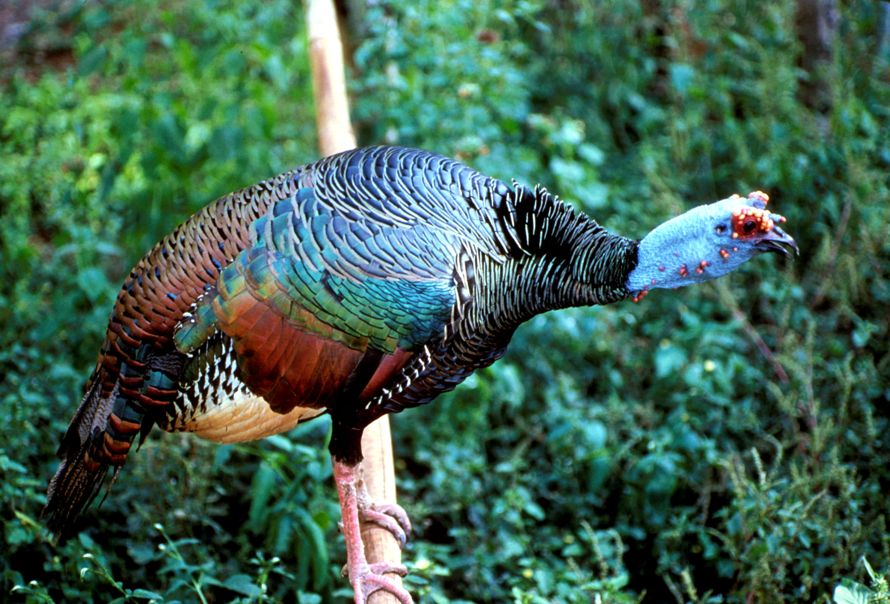
DELFIN MANCHADO
Stenella es un género de cetáceos odontocetos de la familia Delphinidae que reúne cinco especies. El género recibe su nombre en honor al naturalista danés Niels Stensen.
El nombre común para estas especies es delfines manchados.
Se encuentran en mares templados y tropicales de todo el mundo.
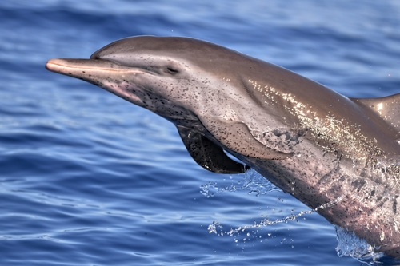
OCELOTE
El ocelote (del náhuatl océlotl; Leopardus pardalis) es una especie de mamíferos carnívoros de la familia Felidae. Se encuentra ampliamente distribuido en América, principalmente en ambientes tropicales, donde se diferencia en numerosas subespecies. Puede confundirse con el margay o tigrillo (Leopardus wiedii).
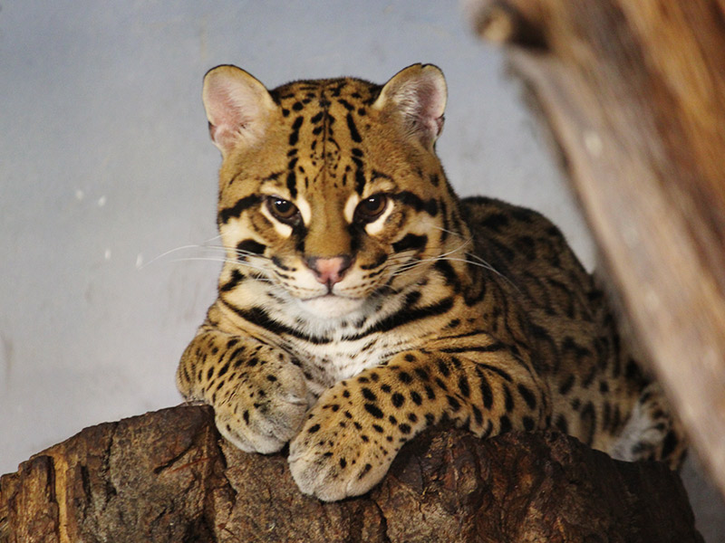
BOA CONSTRICTOR
La boa constrictora (Boa constrictor) es una especie de serpiente de la familia Boidae, y de la subfamilia Boinae. Actualmente, es la única especie del género Boa y mide 5 metros.
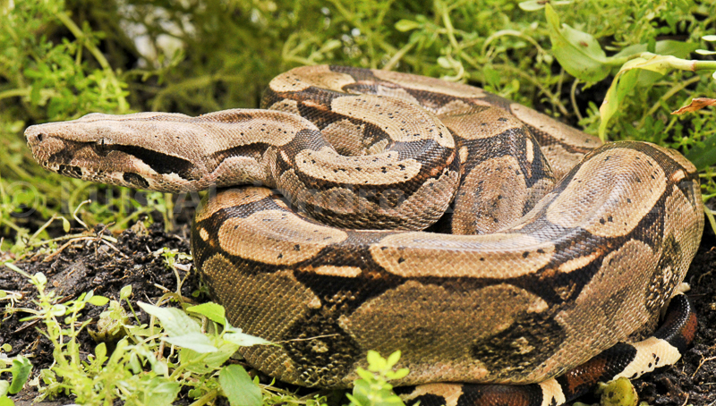
CEIBA
Ceiba pentandra, llamado comúnmente ceiba, ceibo o pochote, es un árbol de la familia Malvaceae (anteriormente perteneciente a la familia Bombacaceae). Es originario de la región de Mesoamérica y se distribuye mundialmente por la zona intertropical.
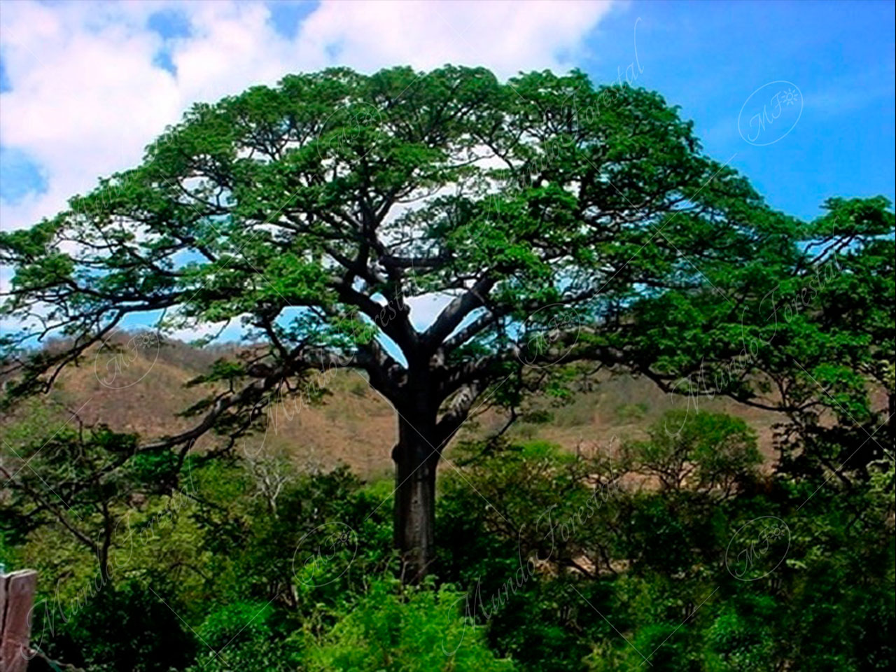
OREJA DE ELEFANTE
Enterolobium cyclocarpum es una especie de árbol del orden Fabales, familia Fabaceae. Es un árbol nativo de América, de regiones tropicales y templadas cálidas. Constituye en una de las dos especies conocidas como "oreja de elefante" en varios países americanos, huanacaxtle, parota, pich, oreja de elefante en México, conacaste en El Salvador, Guatemala, guanacaste en Honduras, Nicaragua y Costa Rica, corotú en Panamá y otras partes, orejero, piñón de oreja o caracaro en Colombia y carocaro en Venezuela. Es una especie maderable y a veces se usa como árbol de ornato. Es el árbol nacional de Costa Rica desde el 31 de agosto de 1959, donde se le identifica además como símbolo de la provincia de Guanacaste.

MANGLE
El mangle es un arbusto o árbol leñoso, perteneciente a las rizoforáceas. Tiene tallos de tres a cuatro metros de altura, aunque a veces alcanza unos 15 metros o más. Sus ramas largas y extendidas dan vástagos que descienden hasta tocar el suelo y arraigar en él. Tiene hojas pecioladas, opuestas, enteras, elípticas, obtusas y gruesas; flores axilares de cuatro pétalos amarillentos; fruto seco de corteza coriácea, pequeño y casi redondo y muchas raíces externas en parte. Los mangles forman ecosistemas, llamados manglares.
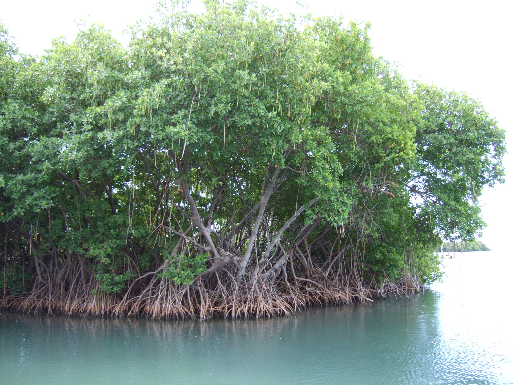
PALO DE CAMPECHE
El palo de Campeche (Haematoxylum campechianum), o palo de tinte, es un árbol de la familia de las leguminosas. Es nativo de Mesoamérica, particularmente de la península de Yucatán y en especial del estado de Campeche, de Guatemala y Belice. De él se obtiene el colorante hematoxilina. El nombre proviene del griego (haima, sangre y xylon, madera), que podría leerse como "madera que sangra". Aparte de para extraer el colorante, su madera se usa para leña y para postes. Las hojas y ramas se usan como forraje. Las flores producen miel. Debido a sus flores atractivas se le usa como ornato alrededor de las casas.
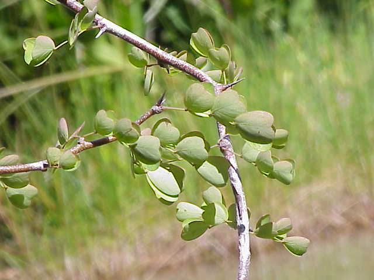
BIXA ORELLANA
El achiote, urucú voz guaraní, rocú, onoto, bija o benis (Bixa orellana) es una especie botánica arborescente de las regiones intertropicales de América, cultivado específicamente en México, República Dominicana, América Central, Colombia, Ecuador, Venezuela, Perú y Bolivia desde la época precolombina. En Paraguay crece en forma espontánea en el sotobosque nativo. De su fruto se obtiene la especia homónima, empleada como colorante y condimento en la comida popular. En México recibe también el nombre común de acotillo.
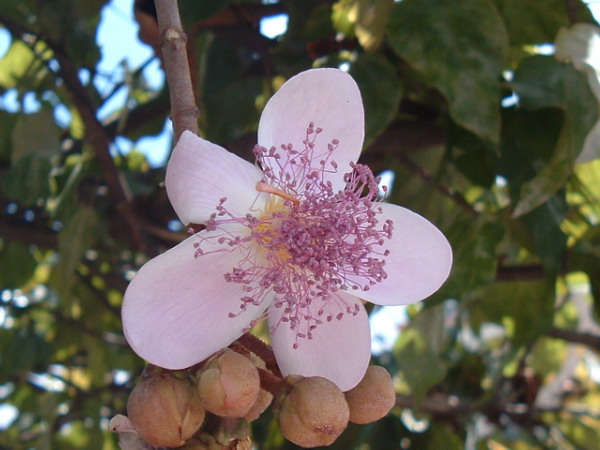
TAPIR
El tapir es el único representante vivo de la familia de los tapiridae del género Tapirus y también considerado familiar lejano del caballo y del rinoceronte. El tapir es de tamaño mediano-grande, aproximadamente de 2 metros de largo y llega a pesar de entre 150 y 300 kilos. Su cuerpo es grueso y de cabeza y cuello grandes que le sirven para poder abrirse paso entre la maleza de los bosques donde vive.
Aunque es una especie ya casi extinta en el estado de Campeche es posible visualizar varios ejemplares en su hábitat natural, especialmente en el ejido Miguel Colorado, del municipio de Champotón.
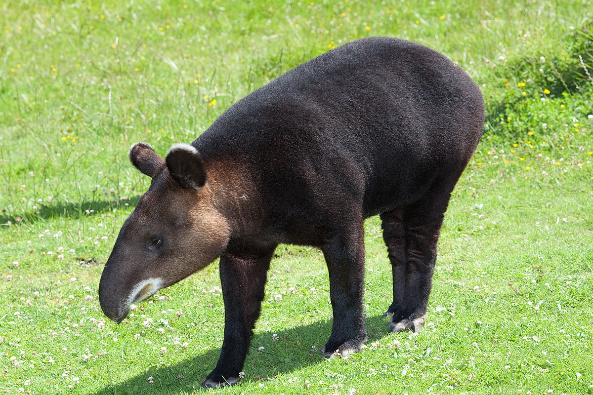
POBLACIÓN
Según las resultados que arrojó el Censo de Población y Vivienda 2020 realizado por el Instituto Nacional de Estadística y Geografía (INEGI), Campeche contaba hasta entonces con un total de 928,363 habitantes, de dicha cantidad, 456,939 eran hombres y 471,424 eran mujeres.
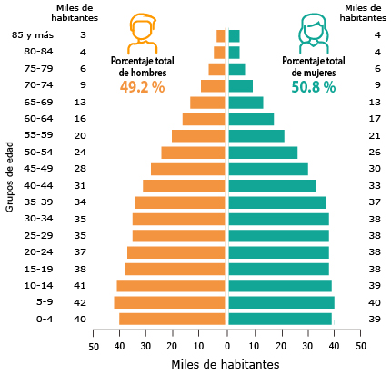
POLÍTICA
El poder Ejecutivo del estado está depositado en el gobernador de Campeche, electo cada seis años, sin posibilidad de reelección. El poder Legislativo se compone de una asamblea unicameral de 35 diputados, 21 electos por mayoría relativa y 14 por representación proporcional electos en una sola circunscripción electoral que es todo el estado. El poder Judicial tiene como cabeza el Tribunal Superior de Justicia del Estado.
Todos los poderes del estado tienen su sede en la ciudad de San Francisco de Campeche, los poderes Ejecutivo y Legislativo, de hecho, tienen sus sedes como vecinos, en la avenida 16 de septiembre, mientras el poder Judicial se ubica en la Av. Patricio Tuerba y Regil, esquina con Av. Casa de Justicia.
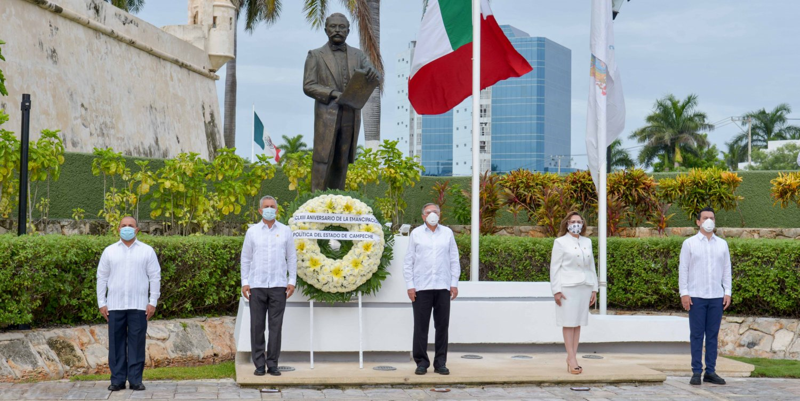
MUNICIPIOS DEL ESTADO
El estado de Campeche está conformado por 11 municipios y dos en proceso de formación (esperando la culminación del proceso legislativo) para un total de 13. Los municipios están gobernados por ayuntamientos cuyo primer regidor es el alcalde o presidente municipal; radicando este en la cabecera municipal, localidad que también alberga a los síndicos y regidores del cabildo municipal, un secretario, un tesorero y varios servidores públicos más.
Los ayuntamientos basan su composición en secciones municipales. Dentro de estas secciones municipales se encuentran localidades que por su ubicación estratégica y su influencia sobre comunidades más pequeñas, pueden convertirse en polos de prestación de servicios y dinamizadores del desarrollo regional.
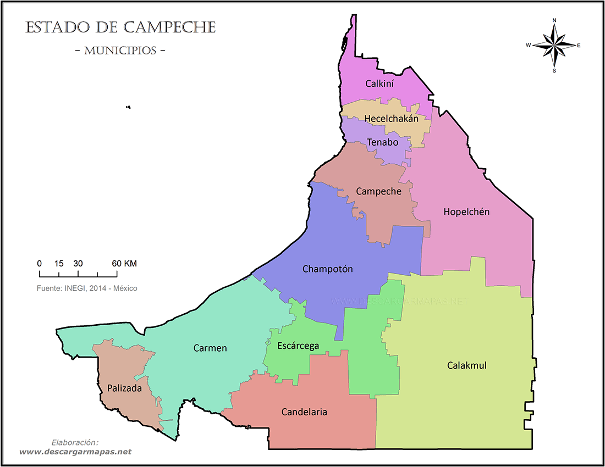
TURISMO
El turismo en Campeche ha tenido un fuerte impulso en los últimos años. En la actualidad, existen diversos proyectos para fomentar el crecimiento de la actividad turística en diversas regiones de la geografía del estado. En tu visita al Estado de Campeche te podrás percatar que puedes realizar diferentes actividades ya que cuenta con recorridos en tranvía por el centro de la ciudad, recorrido en barco pirata y cuenta con un hermoso malecón en el cual disfrutaras de una hermosa vista. Además de sus zonas arqueológicas entre las cuales una de las más importantes y que forma parte del patrimonio cultural es Calakmul, sin embargo cuenta con otras más como Edzna, Uxmal entre otras.
Apuntalando la actividad turística los lugares emblemáticos en Campeche son:
Ciudades y pueblos coloniales: la ciudad histórica y fortificada de San Francisco de Campeche, declarada Patrimonio de la Humanidad, donde prevalecen restos de la antigua muralla que la rodeaba, con sus históricos baluartes, puertas, fuertes, baterías, y su centro y barrios históricos; Palizada, peculiar poblado de arquitectura neoclásica situado a orillas del río Palizada; Becál, pequeño poblado, en donde se combinan las construcciones de estilo neoclásico con las chozas mayas. Existen en Campeche otros poblados con diversos atractivos históricos.
Haciendas: en estas operó la industria agrícola y forestal del estado: maíz, caña de azúcar, henequén, palo de tinte. Dispersas a lo largo del estado, algunas han sido reconstruidas y rehabilitadas con fines turísticos. Destacan las haciendas de Uayamón, Blanca Flor, San Luis Carpizo, San José Carpizo, Chunkanán, Tankuché.
Sitios arqueológicos mayas: el estado de Campeche cuenta con un gran número de sitios arqueológicos mayas abiertos al público. Destacan: Calakmul, una de las principales ciudades mayas del período clásico, sitio declarado Patrimonio de la Humanidad; Edzná, con su majestuoso templo de los cinco pisos y demás estructuras; Isla Uaymil; Isla de Jaina; Becán; Chicaná; Xpujil; El Tigre; Hormiguero; Hochob; Balamkú; Santa Rosa X'tampak; Río Bec. Hay otros sitios, innumerables, en proceso de ser abiertos al público y aún muchos inexplorados.
La costa: el litoral campechano cuenta con 523,3 km de extensión; por su variedad de paisajes naturales, constituye una zona idónea para el disfrute de diversas actividades turísticas. En la costa norte del estado, el litoral está conformado por una extensa franja de manglares; hacia el sur, en el litoral de los municipios de Campeche y el norte de Champotón, la costa es árida, con numerosas colinas boscosas que forman hermosas salientes y ensenadas; siguiendo la línea de costa, en los municipios de Champotón y Carmen, se forma una extensa franja arenosa, que cuenta con playas de gran importancia, pues en estas anidan diversas especies de tortugas marinas. Sobresale por su variedad de paisajes naturales la Isla del Carmen, isla que separa a la Laguna de Términos del Golfo de México y en la que se localiza la ciudad del Carmen. Playas: Punta Xen, Chenkán, Sabancuy, Isla Aguada, Puerto Real, Punta San Julián, Bahamitas, Tortugueros, Playa Norte, Xicalango.
Sitios arqueológicos subacuáticos: en los últimos años se han hallado más de 130 sitios arqueológicos frente a las costas de Campeche, estos abarcan desde la prehistoria hasta el siglo XX, pero en su mayoría se trata de barcos hundidos ubicados en arrecifes de coral poco profundos; además, existen múltiples naufragios codiciados, como el de la nave almiranta Nuestra Señora del Juncal, un galeón de la Flota de la Nueva España que naufragó en 1631 cargado con caudales de monedas de oro y plata. También, a más de 100 km frente a la costa, se encuentra el área de Arrecifes del Banco de Campeche, esta zona la conforman algunos arrecifes emergentes los cuales contienen pequeños cayos; como Cayo Arcas (Cayo del Oeste, Cayo del Centro y Cayo del Este) y los Arrecifes Triángulos (Triángulo Oeste, Triángulo Este y Triángulo Sur), asimismo, existen diversos bancos arrecifales sumergidos como el Banco Obispo. Todo esto hace de la Sonda de Campeche un lugar idóneo para la práctica del submarinismo.
Selvas, humedales, lagunas, esteros, ríos, cenotes, grutas: 40% del territorio campechano es Área Natural Protegida (Los petenes, Laguna de Términos, Calakmul, Balam Kin, Balam Kú y Ría Celestún, colindando con el estado de Yucatán). En el año 2008 se ingresó en la lista indicativa de sitios mexicanos a formar parte del patrimonio mundial de la UNESCO a los humedales de la Laguna de Términos-Centla y a la ecorregión de Los Petenes-Ría Celestún.

CULTURA
GASTRONOMÍA
La variada alimentación de los mayas se enriqueció más con la llegada de los españoles. Los navegantes aportaron a la gastronomía local nuevos componentes y formas de preparación.
Un gran pilar de la gastronomía campechana es sin duda la enorme variedad de productos que el mar le ha proporcionado a sus habitantes desde tiempos inmemoriales. Las diversas especies de pescado y el camarón han sido los principales ingredientes de muchos de los alimentos de la región, aunque no hay que olvidar aquellos que pertenecían originalmente a la cultura maya, como el pavo, el venado, el jabalí y posteriormente el cerdo, introducido por los españoles.
Algunos de los ingredientes y platos más característicos de Campeche son el cazón con el que se hacen panuchos, empanadas, tamales, tacos y pan de cazón; el pámpano en escabeche y los camarones al coco, en paté, en coctel y en platillos calientes; el chile x´catic que se prepara con relleno de cazón y capeado; los cangrejos, de los que se comen las patas en frío con distintos aderezos. También Hay esmedregal, raya, sierra, pulpos, calamares y otras especies como el pámpano, que se empapela con achiote y una pizca de cominos o se prepara en salsa verde; el calamar relleno de camarón y los tamales rellenos de hoja de chaya y huevo cocido, envueltos en hojas de plátano.
El chile habanero es el más común para las salsas, aunque también se utilizan otros para hacer adobos; el achiote es muy apreciado así como las especias y hierbas de olor.
La comida campechana es muy similar a la yucateca, de modo que en ella encontramos expresiones culinarias como el queso relleno, la cochinita pibil, el relleno negro y el famoso mucbil-pollo.
Recetas elaboradas a finales del siglo XIX y principios del XX, revelan una gran riqueza culinaria. Sin embargo, por el hecho de que algunos de los ingredientes utilizados en aquellos tiempos (como tortugas marinas), están vedados ya que las especies involucradas se encuentran en peligro de extinción, estos platillos tradicionales ya no son cocinadas. A pesar de ello, tales recetas son testimonio de la diversidad culinaria de la región.
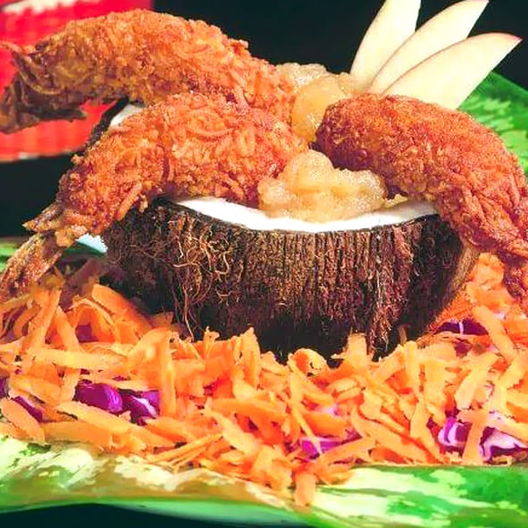
TRAJE REGIONAL DE CAMPECHE
Las mujeres del Estado de Campeche tienen dos trajes típicos; el hipil peninsular y el de "Campechana".
Particularmente en los municipios de Hopelchen, Hecelchakan, Calkini, Tenabo y en el de Campeche, al traje típico para la mujer se le llama hipil. En su forma más elaborada, forma el hipil parte de un terno (vestido que consta de tres partes): jubón, fustán y el propio hipil. El terno es el traje que portan las mujeres campechanas en la tradicional fiesta llamada Vaquería.
El hipil (huipil se le llama en otras partes de México) es generalmente un vestido blanco, de la misma dimensión desde arriba hasta abajo, cosido lateralmente, con dos aberturas para los brazos y una más en forma rectangular para la cabeza. El cuello y mangas así como en la parte inferior el vestido está decorados con motivos de gran colorido, generalmente bordados. Debajo del hipil, se usa una enagua larga y amplia llamada fustán (pic en lengua maya), que generalmente también lleva bordada la parte inferior. El terno es una variante del huipil, es el traje que portan las mujeres campechanas en la tradicional fiesta llama Vaquería.
El traje de gala masculino consta de una filipina de lino blanco, pantalón blanco, completándose el conjunto con un elegante sombrero y alpargatas,
El traje de la Ciudad de San Francisco de Campeche es. En el caso de las mujeres, estas solían estrenar cuatro veces al año: en el carnaval y en las fiestas de San Juan, San Román y la Purísima Concepción. En aquella época las patronas le regalaban a su servidumbre los ajuares completos, que con el paso del tiempo se convirtieron en el traje típico de la mujer campechana (Ciudad de San Francisco de Campeche).
La mujer campechana, especialmente la que vivía dentro del recinto amurallado de San Francisco de Campeche, vistió al principio el "huipil", con una blusa o camisa que conserva la misma hechura de la parte superior del "huipil" original, la blusa se borda a mano con hilos negros alrededor del cuello, de forma cuadrada y de las mangas y del cuello. Los motivos que se bordan están inspirados en las flores de cebolla y calabaza; la primera es más vistosa y más rica en belleza, plasmándose sobre el fondo bordado de lino un bordado de hilo de algodón negro con los símbolos del escudo de la ciudad, murallas y naves con velamen en actitud de arribo. La orilla del cuello y de las mangas lleva un breve encaje que confeccionan con hilos negros y con la misma aguja que han bordado el "punto de cruz". Este encaje se denomina "puntillo" y algunas personas lo llaman "lomillo".
La falda o saya que llega hasta los tobillos es de percal o zaraza, tafeta fina estampada o brocado español, a veces termina con un olán de la misma tela al cual le llaman "arandela". Debajo de la saya lleva una pollera blanca, llamada enagua, recogida al igual que la saya. Complementan el traje un hermoso reboso de Santa María, que saben llevar con gran garbo; este reboso ha sustituido definitivamente la pañoleta o mantilla que anteriormente se portaba. Por último las chanclas o chancletas, confeccionadas en suela dura y charol negro sobre en que se afanan los zapateros con bordados en hilera blanca. Estas chanclas, tienen una reminiscencia morisca. Las puntas se proyectan hacia arriba, en la parte trasera en breve tacón, ya que gustan las bailadoras de armonizar en los sonidos musicales con el golpe del tacón al bailar, el folclore. Se adornan el pelo con peinetas de carey, semicirculares con incrustaciones de oro, monedas antiguas y piedras preciosas.
De su cuello pende una gruesa cadena de oro llamada "soguilla salomónica". A veces estas son tan largas, que abarcan tres vueltas al cuello, llegando hasta la región del ombligo. De esta soguilla penden invariablemente seis monedas antiguas de diez pesos de oro y rematadas por un doblón español o una imagen pesada de oro puro. Los aretes son monedas y a veces una paloma prendida en el lóbulo de la oreja; sostienen las alas y el pico, respectivamente, breves cadenillas que rematan en esferas de oro puro. Su peinado es una larga trenza y moño de vistoso color.
El traje típico masculino consta de pantalón blanco, ancho en las caderas y camisa blanca larga abrochada con botones de oro unidos por una cadena, sombrero de jipi japa, y por calzado, alpargatas de piel de ganado vacuno, con medio tacón.
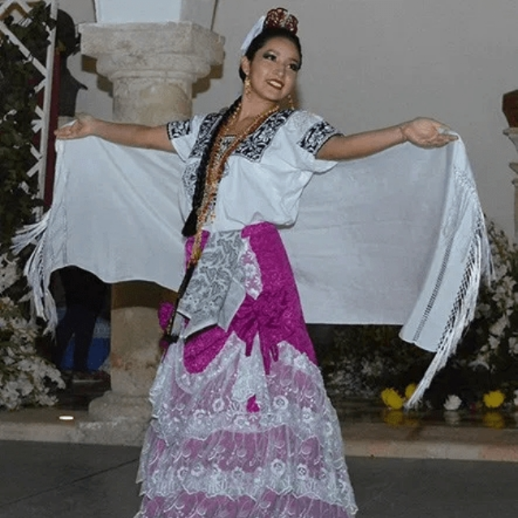
DANZA
La principal danza es la jarana que es un baile de pareja que consiste en un zapateado sin pasos fijos ni diferenciación entre el hombre y la mujer. En ciertas comunidades predominan determinados pasos localmente tradicionales, sin que ellos excluyan a otros diferentes, propios de las fantasías de los danzantes, ya que cada quien puede realizar sus creaciones personales, entremezclando pasos ya conocidos.
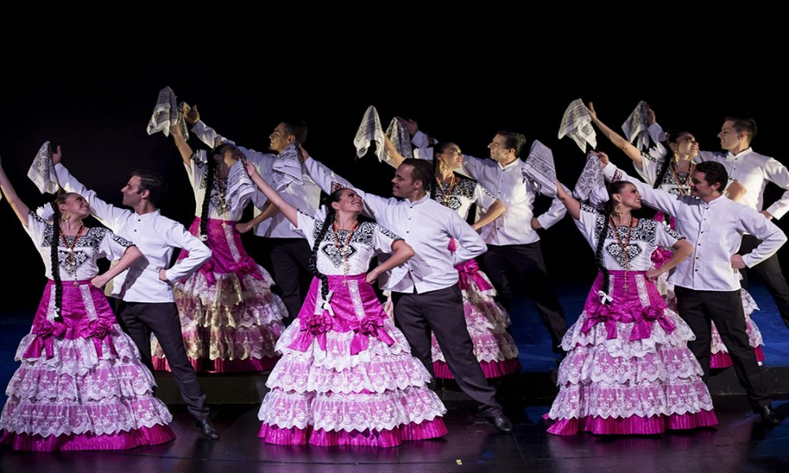
MÚSICA
Además de la música folclórica, en décadas recientes ha habido músicos o grupos que han trascendido a nivel nacional, principalmente cumbia. Entre ellos destacan: Chucho Pinto y sus Kassino, Alfredo "El pulpo" y sus Teclados y Los Socios del Ritmo
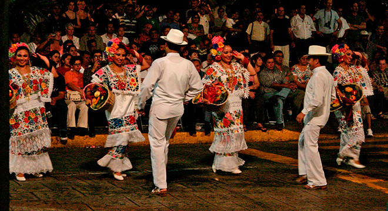
GOBERNADORA
Layda Elena Sansores San Román (San Francisco de Campeche, Campeche; 7 de agosto de 1945) es una política, docente, psicóloga y empresaria mexicana. Es la actual gobernadora de Campeche desde el 16 de septiembre de 2021, tras ganar las elecciones estatales de Campeche de 2021. Ha desempeñado varios cargos públicos como senadora y diputada federal. Además fue la primera alcaldesa de Álvaro Obregón en la Ciudad de México de 2018-2021.
TRAYECTORIA ACADÉMICA
Es psicóloga por la UNAM y maestra normalista por la Benemérita Escuela Nacional de Maestros. Es hija del exgobernador de Campeche Carlos Sansores Pérez y de Elsa María San Román. Ha sido articulista en diversos periódicos; fundadora del primer Centro de Rehabilitación y Educación Especial (CREE) en América Latina (establecido en Campeche), fundadora del Centro de Desarrollo Social y Familiar de la XLIX Legislatura del Congreso de la Unión de México; y organizadora de grupos de promoción voluntaria en las XLIX y LI Legislaturas.
TRAYECTORIA POLÍTICA
Fue militante del Partido Revolucionario Institucional (PRI), en el que se desempeñó en diversos cargos. Tras su renuncia a ese partido político, el 10 de diciembre de 1996, militó en el Partido de la Revolución Democrática (PRD), al que posteriormente renunció en 2001 para unirse a Convergencia hoy Movimiento Ciudadano (MC)- (del que fue Consejera Política Nacional), el cual dejó 31 de marzo de 2014, antes de unirse a su actual formación política el Movimiento Regeneración Nacional, ese mismo año.